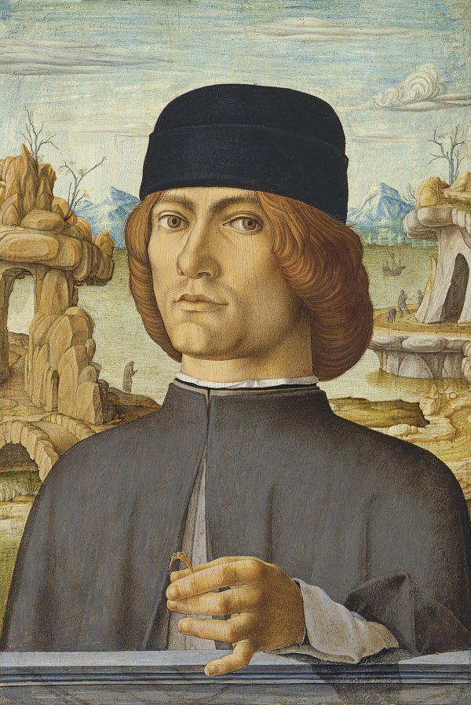

Annunciació
Galeria
Formulari
Creador
Inici
Descripció
un raig lluminós o una mà que ve a tocar a Maria. Composició: ha de presentar dos mons diferents . visible - terestre de maria . invisible - celeste de Déu Els dos personatges l'Àngel Gabriel i Maria donen compte d'aquesta representació. L'Àngel Gabriel, actiu, alat, i immortal qui transmet el missatge. El seu nom significa "l'home de Déu". El és representat dempeus durant la primera part de l'Edat Mitjana després a partir del s. XIII de genolls (influència de l'amor cortès, agenollant als peus d'una dama). Després del Concili de Trento (fi 1563), el és representat en ple vol, per accentuar la majestuositat de l'instant i del personatge. El gest de l'àngel varia: ell assenyala el cel, té les mans creuades per mostrar el seu respecte a maria, tendeix la mà en signe de salutació ... Ell porta de vegades un objecte: una vara, un ceptre, una branca d'olivera (símbol de pau), un palmell (símbol de la mort de Crist), una flor de lys (flor blanca, sense estam símbol de la puresa i la castedat de la verge). Podem llegir també el missatge en una banderola (un fragment amb versos) o bé en un lloc proper a la boca: au maria ... Maria, humana i submisa, passiva ella rep el missatge diví. Ella freqüentment vestit amb un vestit vermell i un mantell blau Està assegut o agenollada a demanat a Déu, per exemple en rebre l'anunci. Alguns objectes són col·locats en relació amb ella: .el llibre en record d'una antiga tradició que fa de Maria "el llibre animat de Crist". L'objecte és anacrònic perquè pertany a un llibre de misses o llibre d'hores, típic de l'Edat mitjana. .la rosa sense espines doncs ella va tenir concepció en pecat.
Autor
Francesco del Cossa (Ferrara, h. 1436 - Bolonya, h. 1477) va ser un pintor quatrecentista italià, pertanyent a l'Escola de Ferrara. Era fill d'un picapedrer a Ferrara. Encara que se sap poc de les seves primeres obres, si es coneix que va viatjar fora de Ferrara quan estava a la fi de la seva vintena o principis de la seva trentena. És considerat el mestre més important de l'escola de Ferrara. El seu estil recorda a Mantegna i Piero della Francesca. És conegut sobretot per les seves frescos. Un dels primers documents que d'ell es tenen és de 1456 quan era l'ajudant del seu pare, Cristofano del Cossa, que en aquell temps estava dedicat a la pintura de les talles i estàtues de l'altar major de la capella del palau bisbal a Ferrara . La seva obra principal són els frescs del palau Schifanoia de Ferrara, que va pintar al costat de Cosimo Tura. El palau era una vila d'esbarjo estiuenc i es troba just als afores de les portes de la ciutat. Junts, van pintar una sèrie d'elaborades al·legories sobre temes dels signes del zodíac i els mesos de l'any. Aquests van ser només parcialment restaurats en el segle XX, i n'hi ha tres que està raonablement atribuïts a Cossa. D'ells, una de les imatges més destacades és l'horda de nens petits nus a la Al·legoria de Maig - Triomf d'Apol·lo, en el que aparentment és un símbol del prolífic florida de la primavera.
Retrat de Francesco de la Cossa

Zoom obra